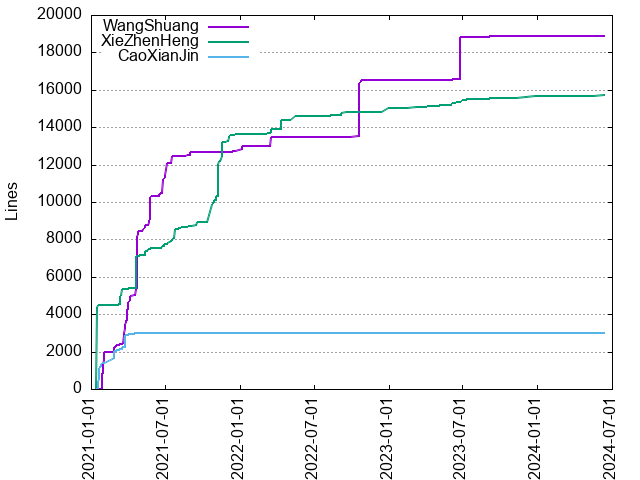
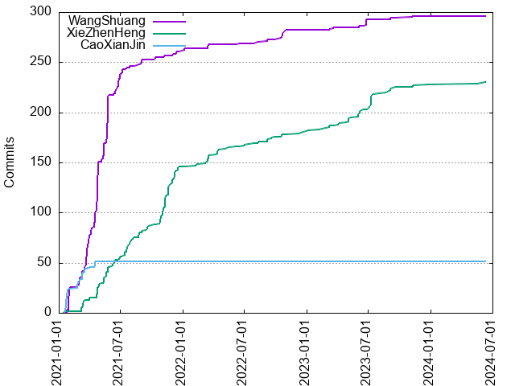

Authors
| Author | Commits (%) | + lines | - lines | First commit | Last commit | Age | Active days | # by commits |
|---|
| WangShuang | 296 (51.21%) | 18872 | 7652 | 2021-01-14 | 2023-11-08 | 1028 days, 4:50:11 | 88 | 1 |
| XieZhenHeng | 231 (39.97%) | 15736 | 6641 | 2021-01-14 | 2024-06-11 | 1244 days, 1:29:36 | 128 | 2 |
| CaoXianJin | 51 (8.82%) | 2968 | 1845 | 2021-01-18 | 2021-04-16 | 87 days, 23:59:50 | 18 | 3 |


| Month | Author | Commits (%) | Next top 5 | Number of authors |
|---|
| 2024-06 | XieZhenHeng | 2 (100.00% of 2) | | 1 |
| 2024-05 | XieZhenHeng | 1 (100.00% of 1) | | 1 |
| 2023-12 | XieZhenHeng | 1 (100.00% of 1) | | 1 |
| 2023-11 | XieZhenHeng | 2 (50.00% of 4) | WangShuang | 2 |
| 2023-09 | XieZhenHeng | 5 (83.33% of 6) | WangShuang | 2 |
| 2023-08 | XieZhenHeng | 2 (100.00% of 2) | | 1 |
| 2023-07 | XieZhenHeng | 14 (100.00% of 14) | | 1 |
| 2023-06 | XieZhenHeng | 9 (52.94% of 17) | WangShuang | 2 |
| 2023-05 | XieZhenHeng | 5 (100.00% of 5) | | 1 |
| 2023-04 | XieZhenHeng | 3 (100.00% of 3) | | 1 |
| 2023-03 | XieZhenHeng | 3 (50.00% of 6) | WangShuang | 2 |
| 2023-02 | XieZhenHeng | 2 (100.00% of 2) | | 1 |
| 2023-01 | XieZhenHeng | 1 (100.00% of 1) | | 1 |
| 2022-12 | XieZhenHeng | 3 (100.00% of 3) | | 1 |
| 2022-10 | WangShuang | 9 (81.82% of 11) | XieZhenHeng | 2 |
| 2022-09 | XieZhenHeng | 5 (62.50% of 8) | WangShuang | 2 |
| 2022-08 | XieZhenHeng | 2 (66.67% of 3) | WangShuang | 2 |
| 2022-07 | XieZhenHeng | 1 (100.00% of 1) | | 1 |
| 2022-06 | XieZhenHeng | 3 (75.00% of 4) | WangShuang | 2 |
| 2022-05 | XieZhenHeng | 2 (100.00% of 2) | | 1 |
| 2022-04 | XieZhenHeng | 6 (100.00% of 6) | | 1 |
| 2022-03 | XieZhenHeng | 9 (69.23% of 13) | WangShuang | 2 |
| 2022-02 | XieZhenHeng | 2 (100.00% of 2) | | 1 |
| 2022-01 | WangShuang | 3 (100.00% of 3) | | 1 |
| 2021-12 | XieZhenHeng | 15 (78.95% of 19) | WangShuang | 2 |
| 2021-11 | XieZhenHeng | 34 (94.44% of 36) | WangShuang | 2 |
| 2021-10 | XieZhenHeng | 10 (83.33% of 12) | WangShuang | 2 |
| 2021-09 | XieZhenHeng | 7 (63.64% of 11) | WangShuang | 2 |
| 2021-08 | XieZhenHeng | 9 (75.00% of 12) | WangShuang | 2 |
| 2021-07 | XieZhenHeng | 15 (62.50% of 24) | WangShuang | 2 |
| 2021-06 | WangShuang | 20 (66.67% of 30) | XieZhenHeng | 2 |
| 2021-05 | WangShuang | 66 (79.52% of 83) | XieZhenHeng | 2 |
| 2021-04 | WangShuang | 75 (77.32% of 97) | XieZhenHeng, CaoXianJin | 3 |
| 2021-03 | WangShuang | 48 (65.75% of 73) | CaoXianJin, XieZhenHeng | 3 |
| 2021-02 | WangShuang | 11 (61.11% of 18) | CaoXianJin | 2 |
| 2021-01 | CaoXianJin | 24 (55.81% of 43) | WangShuang, XieZhenHeng | 3 |
| Year | Author | Commits (%) | Next top 5 | Number of authors |
|---|
| 2024 | XieZhenHeng | 3 (100.00% of 3) | | 1 |
| 2023 | XieZhenHeng | 47 (77.05% of 61) | WangShuang | 2 |
| 2022 | XieZhenHeng | 35 (62.50% of 56) | WangShuang | 2 |
| 2021 | WangShuang | 261 (56.99% of 458) | XieZhenHeng, CaoXianJin | 3 |